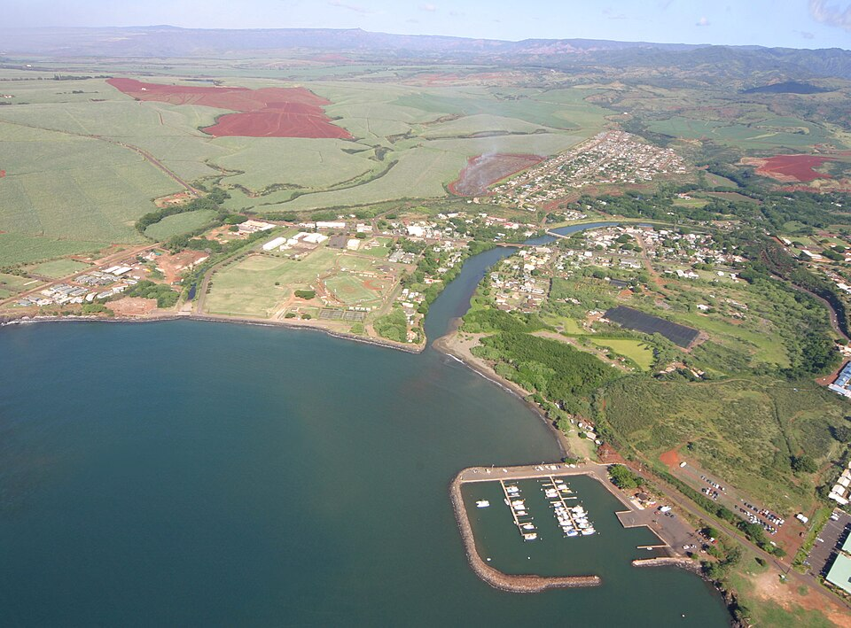

Hanapēpē
Place: Hanapēpē, Kauaʻi
Type: Historic town / valley / cultural landscape
Story it tells: A town whose name reflects Kauaʻi's rugged geology and whose history spans Native Hawaiian agriculture, the salt trade, plantation immigration, and one of the island's best-preserved historic districts.

Hanapēpē is one of Kauaʻi's oldest communities and is commonly interpreted as meaning "crushed bay" or "crushed valley." The name likely reflects the area's dramatic geology. The sea cliffs surrounding Hanapēpē Bay have been battered by millions of years of erosion, while heavy rains draining from the slopes of Mount Waiʻaleʻale frequently create landslides that carried mud and rock into the river and bay.
Before Western contact, Hanapēpē was one of Kauaʻi's productive agricultural valleys. Water diverted from the Hanapēpē River irrigated extensive loʻi kalo (taro terraces), while the nearby Hanapēpē Salt Ponds produced prized paʻakai that became an important trade commodity. Under Chief Kaumualiʻi, both agriculture and salt production helped make Hanapēpē a significant economic center.
Following the rise of the sugar industry during the nineteenth century, Hanapēpē developed differently than many plantation communities, including nearby ʻEleʻele. Rather than functioning as a company town, it became one of Kauaʻi's few independent commercial centers. Chinese, Japanese, and Filipino immigrants who completed plantation contracts established their own businesses, restaurants, rice farms, and shops, creating the diverse streetscape that still characterizes the town today.
Hanapēpē also occupies an important place in local history. The valley served as the setting for the decisive battle during Humehume's (Kaumualiʻi's son) 1824 rebellion, which marked the final attempt to restore Kauaʻi's political independence. Traditional moʻolelo likewise remember Hanapēpē as a place connected with refuge, conflict, and legendary chiefs, preserving layers of history that extend beyond the written record.
When Kauaʻi's sugar industry declined during the twentieth century, Hanapēpē avoided becoming a ghost town. Residents restored many of the community's historic wooden buildings instead of replacing them, and the town gradually reinvented itself as Kauaʻi's artistic center. Today, Hanapēpē Art Night fills the historic main street, while galleries, cafés, and locally owned businesses occupy buildings that trace their origins to the plantation era.
Modern audiences may also recognize Hanapēpē for another reason. During the development of Disney's Lilo & Stitch, artists visited Kauaʻi in search of an authentic small Hawaiian town. Hanapēpē's colorful storefronts, quiet streets, and close-knit community became one of the principal inspirations for the fictional hometown depicted throughout the film.